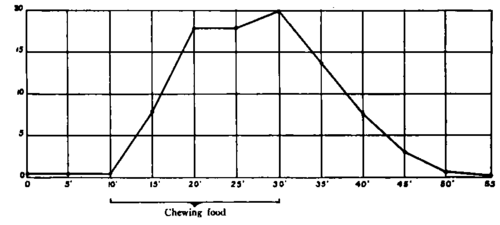

IV. Gastric Secretion Induced By Tasting And Chewing Palatable Food
Description
This section is from the book "The Control Of Hunger In Health And Disease", by Anton Julius Carlson. Also available from Amazon: The Control of Hunger in Health and Disease.
IV. Gastric Secretion Induced By Tasting And Chewing Palatable Food
1. The Secretion Rate
We have records of 156 tests of the appetite secretion of Mr. V. during the 20 minutes' mastication of the noonday meal. The particular ingredients of this meal were of his own selection, and varied from day to day. The meal usually included soup and some kind of meat and gravy, and always milk and a dessert. Secretion of gastric juice during 20 minutes' mastication of palatable food was: lowest, 30 c.c.; highest, 156 c.c.; average, 70 c.c.; number of experiments, 156.
Fig. 29.-Typical curve of secretion of gastric juice of Mr. V. on mastication of palatable food for 20 minutes. The gastric juice was collected at 5-minute intervals. The rise in the secretion rate during the last 5 minutes of mastication is due to chewing the dessert (fruit).
This gives an average rate of secretion of 3.5 c.c. of gastric juice per minute. The maximum rate of secretion determined at any time was 54 c.c. in 5 minutes, or 10.8 c.c. per minute; the lowest was 7 c.c. in 5 minutes, or 1.4 c.c. per minute. The secretion rate is proportional to the palatability of the food. Thus the secretion rate is nearly always highest in the last 5-minute period, when Mr. V. masticates the dessert, and on the day when the highest rate of secretion was noted (156 c.c. in 20 minutes) Mr. V. stated that the lunch was "unusually fine".
Rate Of Secretion Of Gastric Juice In Consecutive 5-Min. Periods, C.c.
Experiment No. | Before Starting Chewing | During Chewing | On Cessation of Chewing | |||||||
20....... | I | OS | 0.8 | IO | 15 | H | 20 | 5 | 3 | 1.0 |
3i....... | 11 | 18 | 17 | 23 | 10 | 6 | 2.0 | |||
35....... | OS | O.6 | O.7 | 15 | 16 | 15 | 18 | 8 | 4 | 1-5 |
55....... | 03 | 2.0 | 3-0 | 20 | 22 | 21 | 30 | 15 | 6 | 6.0 |
86....... | O, 2 | O. 2 | 0 3 | 5 | 20 | 18 | 20 | 9 | 3 | 1.0 |
94....... | O. 2 | 0.3 | O. 2 | 6 | 11 | 15 | 12 | 3 | 2 | 0.5 |
120....... | O. 2 | O. 2 | O. I | 6 | 28 | 20 | 29 | 8 | 6 | 2.0 |
150....... | O. 2 | 0 3 | O. 2 | 22 | 54 | 35 | 45 | 20 | 15 | 8.0 |
Is this rate and quantity of appetite secretion of gastric juice typical for normal adults ? Mr. V. is in normal health, except for 73 c.c. and 48.5 c.c. gastric juice in 60 minutes. This low rate of secretion (about 1 c.c. per minute) must be due to the advanced age and to a malignant tumor of the esophagus. The ten-year-old girl studied by Sommerfeld secreted no to 150 c.c. gastric juice in 90 minutes on chewing meat or mixed food for 30 to 40 minutes, a secretion rate of 2 to 2.5 c.c. per minute. The maximum secretion rate in the twenty-three-year-old girl studied by Kaznelson and Bickel was 5 c.c. per minute, the average secretion rate being much lower. Hornborg's five-year-old boy secreted 15 to 25 c.c. in 30 minutes on chewing meat or apple pie. Chewing bread or milk yielded less than half this amount. The three-year-old child observed by Bogen, on chewing meat for 15 minutes, yielded 6 to infrequent periods of headache and nervousness, the etiology of which is obscure. Troller reports 5 experiments on a person with nervous dyspepsia. Chewing beefsteak for 15 minutes yielded 55 c.c. of gastric juice, while 3 experiments on a person with hyperacidity gave 50 c.c. gastric juice in 15 minutes. This is a secretion of a rate of about 3.5 c.c. per minute. Chewing bread for 15 minutes yielded much less gastric juice. In the case of persons with hypo-chlorhydria the average secretion for 15 minutes (chewing beefsteak) was only 28 c.c. In Umber's fistula case (a man fifty-nine years old) two tests with chewing beefsteak for 15 minutes yielded 22.5 c.c. gastric juice, or an average rate of less than 1 c.c. per minute.
Table III. Rate Of Appetite Secretion Of Gastric Juice Of Mr. V. Detail Of Typical Experiments
These data reported by previous investigators cannot be directly compared with our results on Mr. V. for the reason that the collection of the gastric juice was not always confined to the actual period of mastication of the food. The rate of the appetite secretion starts to fall almost as soon as Mr. V. ceases to masticate the food, and in 15 minutes the activity of the gastric glands is in most cases down to the level of the continuous secretion. The secretion rate is highest during the actual tasting of the food.
In this respect there is a marked difference between man and dog. In the dog, after 12 to 24 hours of starvation, sham feeding with meat for 5 minutes may initiate and keep up secretion of gastric juice for 3 to 6 hours (Pavlov, Rosemann). It is obvious that in these tests on dogs the starvation period was much longer and the hunger and appetite more intense than in our experiments on Mr. V. Another factor is probably the greater voluntary control over attention and other cerebral processes in man.
It may be of interest in this connection to note the rates of gastric secretion that have been obtained by sham feeding in dogs. Konowaloff reports 4 c.c. per minute; Schoumow-Simanowsky found a maximum of 5 c.c. per minute; and Rosemann (in a dog weighing 24 kg.) gives as the average 3.4 c.c. per minute. Since the quantity of gastric glands even in very large dogs is probably only a third of that in the adult man, the foregoing data seem to indicate that the gastric glands in dogs work with greater speed than the gastric glands of man.
2. The direct relation between the rate of appetite gastric secretion and the palatableness of the food.-The mastication of bread and butter or the taking of milk in the mouth yields much less gastric juice than the chewing of meat. This is in line with results of previous observers on man. The taste nerve-endings are evidently stimulated more intensely by the readily diffusible sapid substances in the meat. In general the desserts (pies, pudding, fruits) yielded even greater secretion than meat. This was particularly noticeable in the case of chewing oranges. Mr. V. is especially fond of oranges.
The sapid substances in the orange juice probably diffuse readily and thus reach all the taste nerve-endings in marked concentration. There is no question but that the mastication of a palatable dessert at the end of a meal serves to augment and prolong the appetite secretion of gastric juice.
3. The Latent Period Of The Gastric Appetite Secretion
Pavlov and his coworkers found that the appetite gastric secretion in dogs exhibited uniformly a latent period of 5 to 6 minutes. According to the literature the latent period of the appetite gastric-juice secretion in man varies from 3 to 9 minutes. The latent period depends primarily on the condition of the gastric glands. Thus if there is a continuous gastric secretion of 2 to 6 c.c. per 10 minutes at the time mastication of the food begins, the appetite secretion shows practically no latent period at all. The quantity of gastric juice secreted during the first 5 minutes of chewing is just as great as that secreted during the second or third 5-minute periods. On the other hand, if the continuous secretion is very low (0.2 to 0.3 c.c. per 10 minutes) the appetite secretion shows a latent period of 2 to 4 minutes. It is therefore evident that with the gastric secretion already in progress the appetite secretion reflex exhibits no greater latent time than neuromuscular reflexes in general.
The latent period varies indirectly with the intensity of the appetite stimulation. If the continuous secretion is very low, the latent period of the secretion does not exceed 2 to 3 minutes, provided the food is very palatable.
Continue to:
- prev: Table II. Secretion Of Gastric Juice (Mr. V.) On Seeing, Smelling, And Thinking Of Food When Hungry
- Table of Contents
- next: V. Total Secretion Of Gastric Juice In Man On An Average Meal